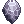
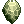

Biolab Gear
You can obtain several items and enchantments via the Bio Labs. Below you can read about the details.
Equipment
- Go to Lighthalzen and walk to the Guard.
@navi lighthalzen 267/200Talk to him until a blue text appears, and he lets you through. - Find the Weird Old Man
@navi lighthalzen 342/290and choose Talk with him.
Currency
To obtain these equipment, you need three type of currencies.
They are dropped by the monsters on Bio Lab Level 2, Level 3 and Level 4.
| Ghost Chill | Will of Warrior (Level 3) | Blood Thirst (Level 4) |
Equipment List
| Armors | |||
|---|---|---|---|
| Image | Name | Price | Stats |
| Giant Shield[1] |
100 Will of Warrior 50 Blood Thirst 35 Ghost Chill |
Reduces damage from big monsters by 5%.
If upgraded to Level 9 or higher, adds additional 5% reduction. | |
| Geffenia Water Book[1] |
100 Will of Warrior 50 Blood Thirst 22 Ghost Chill |
INT +1, MDEF +2.
If the pure INT is 120, MATK +10, MaxHP +800. When equipped with La'cryma Stick [2], the Floating Casting for Jack Frost, Frost Misty, and Storm Gust will be reduced 4 times % more than shield refining rate. | |
| Bible of Promise (2nd Vol.) [1] |
100 Will of Warrior 50 Blood Thirst 22 Ghost Chill |
MDEF +5.
Allows the user to use Level 2 Odin's Power which increases Atk and Matk by 100 while lowering defense and Mdef by 20. Increases effectiveness of your Heal, Sanctuary and Potion Pitcher by 5%. | |
| Salvage Cape |
300 Will of Warrior 300 Blood Thirst 400 Ghost Chill |
Possible to use Cicada Skin Shed
Level 1. Increase cooldown by 30sec of the skill, 2 times more on SP consumption of all skills when equipped. Upon de-equipping SP -1200. | |
| Assassin Handcuffs[1] |
100 Will of Warrior 50 Blood Thirst 35 Ghost Chill |
MaxSP +20, CRIT +3.
When equipped with Krishna, increases ATK +50, attack power 50% increase on Sonic Blow, FLEE - 30. When equipped with Chakram, increases CRI +4, and 40% of critical attack power, MaxHP - 10%. | |
| Green Operation Coat[1] |
100 Will of Warrior 50 Blood Thirst 30 Ghost Chill |
DEX + 1, MaxSP + 30.
When equipped a Scalpel while killing Demi-human or Animal enemies, drops 'Immortal Heart' or 'Alcohol' at a certain rate. This rate increases depending on the refine level. | |
| Ancient Gold Ornament[1] |
300 Will of Warrior 300 Blood Thirst 400 Ghost Chill |
If base Lv. 150, All Stats +2.
If Swordsman, Merchant, Thief class, ATK + 8%. If Mage or Acolyte, MATK + 8%, increase 7% of heal amount. If Archer, DEX +3, increase long distance physical attack power 10%. | |
| Weapons | |||
|---|---|---|---|
| Image | Name | Price | Stats |
| Agent Katar[1] |
100 Blood Thirst 10 Ghost Chill |
Increases Hit Success rate depending on Base Luck. | |

|
Guillotine Katar[1] |
100 Blood Thirst 85 Ghost Chill |
Increases damage to Demihuman monsters by 50%. Increases damage of Cross Impact by 30%. Decreases Flee by 30. |
| Ygnus Stale[1] |
100 Blood Thirst 35 Ghost Chill |
Adds Ignition status while attacking physically while risking being burned as well. Not possible to destroy. | |
| End Sektura[1] |
100 Blood Thirst 35 Ghost Chill |
Has a chance of casting Cold slower on the target while physically attacking while risking being cast on yourself. | |
| Cannon Spear[1] |
100 Blood Thirst 40 Ghost Chill |
Decreases MaxSP by 100. Increases damage of Cannon Spear by 13% and increases with each refine level. | |
| Giant Lance |
300 Will of Warrior 300 Blood Thirst 400 Ghost Chill |
ASPD -10, when you de-equip SP -600. Adds 20 sec on delay for reuse of Clashing Spiral. When pure STR is over 120, adds ATK 300. | |

|
Chilly Spell Book[2] |
100 Blood Thirst 40 Ghost Chill |
Increases damage from Diamond Dust and Cold Bolt spells depending on refine level as well as increasing SP consumption. MATK +160. |
| Light of Recovery |
100 Blood Thirst 40 Ghost Chill |
A staff that increases the potency of Heal and Archbishop Healing skills while increasing SP consumption depending on refine level. MATK +160. | |
| Aztoe Nail |
100 Blood Thirst 35 Ghost Chill |
Has a chance of activating freeze status while physically attacking and increases the chance with each refine level. MATK +80. | |
| Scarletto Nail |
100 Blood Thirst 35 Ghost Chill |
Has a chance of activating curse status while physically attacking and increases the chance with each refine level. MATK +80. | |

|
Bloody Cross |
100 Blood Thirst 40 Ghost Chill |
When dealing melee physical damage, has a chance to autospell Hell Inferno Lv1. Increased refine rate increases the chance of activation. |
| Catapult[2] |
100 Blood Thirst 35 Ghost Chill |
Increases the damage of Triangle Shot depending on refine level as well as increasing SP consumption of the skill. | |
| Big CrossBow[2] |
100 Blood Thirst 35 Ghost Chill |
Increases the damage of Arrow Storm depending on refine level as well as increasing SP consumption of the skill. If Base AGI is 120, adds 1 ASPD. | |
| Creeper Bow[2] |
100 Blood Thirst 35 Ghost Chill |
Has a chance of activating Fiber Lock while attacking. | |
Enchantment
| Can Break | Can Be Reset | Cost |
|---|---|---|
| No | Yes |
- Warp to Dungeons > Bio Lab. Go to the second floor.
- Go to the south-east dormitories
@navi lhz_dun02 206/33. (See map on the right.) - There will be a tunnel in the south-west corner.
- Enter the tunnel, go south, east and enter the warp.
- Talk to the Sorcerer
@navi lhz_cube 233/24and choose Here you are, sir.
There are a few rules you must keep in mind:
- You can enchant your items with up to 2 random Enchants (hidden 3rd and 4th slots).
- Enchants can be reset separately.
- You must be wearing the equipment to enchant it.
Currency
| Name | Description |
|---|---|
| 10 Ghost Chill | Reset enchantment. |
| 10 Blood Thirst | Enchants the 3rd slot. |
| 10 Will of Warrior | Enchants the 4th slot. |
Enchant List
| Weapon Enchants | |
|---|---|
| Type | Level |
 STR STR
|
1~3 |
 AGI AGI
|
1~3 |
 VIT VIT
|
1~3 |
 INT INT
|
1~3 |
 DEX DEX
|
1~3 |
 LUK LUK
|
1~3 |
 Fighting Spirit Fighting Spirit
|
1~3 |
 Sharp Sharp
|
1~3 |
 Expert Archer Expert Archer
|
1~3 |
 Spell Spell
|
1~3 |
| ASPD | 1 |
| Armor Enchants | |
|---|---|
| Type | Level |
| STR
|
1~3 |
| AGI
|
1~3 |
| VIT
|
1~3 |
| INT
|
1~3 |
| DEX
|
1~3 |
| LUK
|
1~3 |
|  DEF | 3, 6, 9, 12 |
|  MDEF | 2, 4, 6, 8, 10 |
 HP HP
|
100, 200, 300 |
 SP SP
|
50 |
 FLEE FLEE
|
1, 3, 6 |